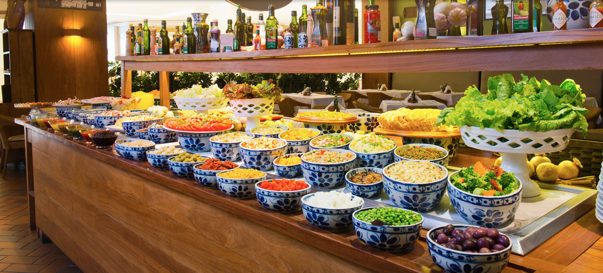

Cardápio digital
Cozinha & Chopp
Buffet, rodízio de pizza, massas, risotos e grelhados — a nossa carta completa, do jeitinho que você gosta.

Cardápio digital
Buffet, rodízio de pizza, massas, risotos e grelhados — a nossa carta completa, do jeitinho que você gosta.